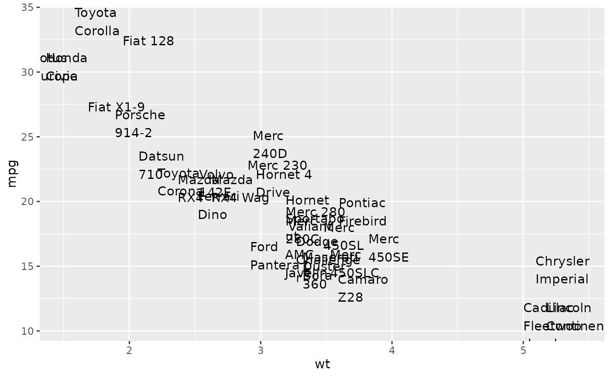
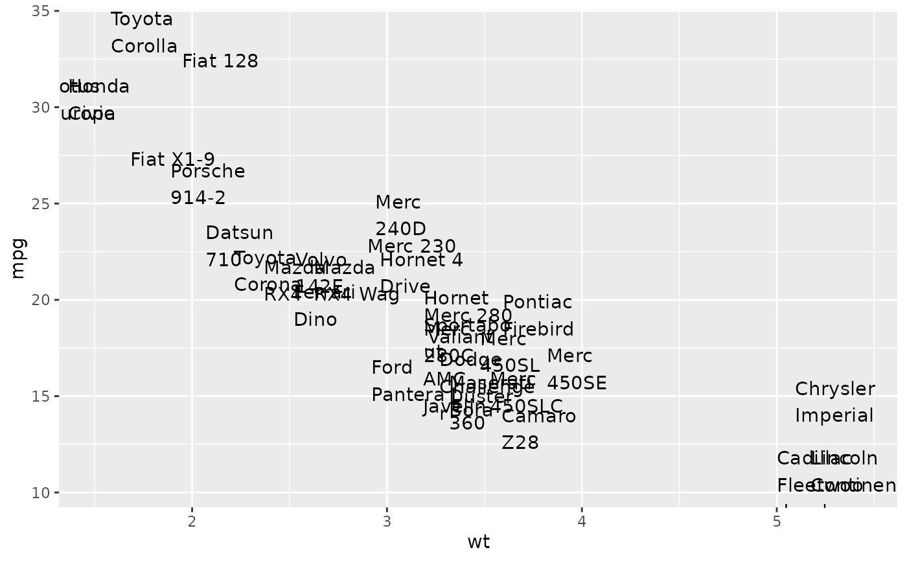

The geom is an extension of geom_text() and geom_label() that allows you
to draw richly formatted text in marquee-markdown format in your plot. For
plain text it is a near-drop-in replacement for the above geoms except some
sizing might be very slightly different. However, using this geom you are
able to access the much more powerful font settings available in marquee, so
even then it might make sense to opt for this geom.
Usage
geom_marquee(
mapping = NULL,
data = NULL,
stat = "identity",
position = "identity",
...,
size.unit = "mm",
na.rm = FALSE,
show.legend = NA,
inherit.aes = TRUE
)Arguments
- mapping
Set of aesthetic mappings created by
aes(). If specified andinherit.aes = TRUE(the default), it is combined with the default mapping at the top level of the plot. You must supplymappingif there is no plot mapping.- data
The data to be displayed in this layer. There are three options:
If
NULL, the default, the data is inherited from the plot data as specified in the call toggplot().A
data.frame, or other object, will override the plot data. All objects will be fortified to produce a data frame. Seefortify()for which variables will be created.A
functionwill be called with a single argument, the plot data. The return value must be adata.frame, and will be used as the layer data. Afunctioncan be created from aformula(e.g.~ head(.x, 10)).- stat
The statistical transformation to use on the data for this layer. When using a
geom_*()function to construct a layer, thestatargument can be used to override the default coupling between geoms and stats. Thestatargument accepts the following:A
Statggproto subclass, for exampleStatCount.A string naming the stat. To give the stat as a string, strip the function name of the
stat_prefix. For example, to usestat_count(), give the stat as"count".For more information and other ways to specify the stat, see the layer stat documentation.
- position
A position adjustment to use on the data for this layer. This can be used in various ways, including to prevent overplotting and improving the display. The
positionargument accepts the following:The result of calling a position function, such as
position_jitter(). This method allows for passing extra arguments to the position.A string naming the position adjustment. To give the position as a string, strip the function name of the
position_prefix. For example, to useposition_jitter(), give the position as"jitter".For more information and other ways to specify the position, see the layer position documentation.
- ...
Other arguments passed on to
layer()'sparamsargument. These arguments broadly fall into one of 4 categories below. Notably, further arguments to thepositionargument, or aesthetics that are required can not be passed through.... Unknown arguments that are not part of the 4 categories below are ignored.Static aesthetics that are not mapped to a scale, but are at a fixed value and apply to the layer as a whole. For example,
colour = "red"orlinewidth = 3. The geom's documentation has an Aesthetics section that lists the available options. The 'required' aesthetics cannot be passed on to theparams. Please note that while passing unmapped aesthetics as vectors is technically possible, the order and required length is not guaranteed to be parallel to the input data.When constructing a layer using a
stat_*()function, the...argument can be used to pass on parameters to thegeompart of the layer. An example of this isstat_density(geom = "area", outline.type = "both"). The geom's documentation lists which parameters it can accept.Inversely, when constructing a layer using a
geom_*()function, the...argument can be used to pass on parameters to thestatpart of the layer. An example of this isgeom_area(stat = "density", adjust = 0.5). The stat's documentation lists which parameters it can accept.The
key_glyphargument oflayer()may also be passed on through.... This can be one of the functions described as key glyphs, to change the display of the layer in the legend.
- size.unit
How the
sizeaesthetic is interpreted: as millimetres ("mm", default), points ("pt"), centimetres ("cm"), inches ("in"), or picas ("pc").- na.rm
If
FALSE, the default, missing values are removed with a warning. IfTRUE, missing values are silently removed.- show.legend
logical. Should this layer be included in the legends?
NA, the default, includes if any aesthetics are mapped.FALSEnever includes, andTRUEalways includes. It can also be a named logical vector to finely select the aesthetics to display. To include legend keys for all levels, even when no data exists, useTRUE. IfNA, all levels are shown in legend, but unobserved levels are omitted.- inherit.aes
If
FALSE, overrides the default aesthetics, rather than combining with them. This is most useful for helper functions that define both data and aesthetics and shouldn't inherit behaviour from the default plot specification, e.g.annotation_borders().
Details
Styling of the text is based on a style set with the exception that the
standard aesthetics such as family, size, colour, fill, etc. are recognized
and applied to the base tag style. The default style set (classic_style)
can be changed using the style aesthetic which can take a vector of style
sets so that each text can rely on it's own style if needed. As with
element_marquee(), the fill aesthetic is treated differently and not
applied to the base tag, but to the body tag as a skip_inherit() style so
as to not propagate the fill.
Contrary to the standard text and label geoms, geom_marquee() takes a
width aesthetic that can be used to turn on soft wrapping of text. The
default value (NA) lets the text run as long as it want's (honoring hard
breaks), but setting this to something else will instruct marquee to use at
most that amount of space. You can use grid units to set it to an absolute
amount.
Examples
library(ggplot2)
# Standard use
p <- ggplot(mtcars, aes(wt, mpg))
p + geom_marquee(aes(label = rownames(mtcars)))
 # Make use of more powerful font features (note, result may depend on fonts
# installed on the system)
p + geom_marquee(
aes(label = rownames(mtcars)),
style = classic_style(weight = "thin", width = "condensed")
)
# Make use of more powerful font features (note, result may depend on fonts
# installed on the system)
p + geom_marquee(
aes(label = rownames(mtcars)),
style = classic_style(weight = "thin", width = "condensed")
)
 # Turn on line wrapping
p + geom_marquee(aes(label = rownames(mtcars)), width = unit(2, "cm"))

# Style like label
label_style <- modify_style(
classic_style(margin = trbl(0)),
"body",
padding = skip_inherit(trbl(4)),
border = "black",
border_size = skip_inherit(trbl(1)),
border_radius = 3
)
p + geom_marquee(aes(label = rownames(mtcars), fill = gear), style = label_style)
# Turn on line wrapping
p + geom_marquee(aes(label = rownames(mtcars)), width = unit(2, "cm"))

# Style like label
label_style <- modify_style(
classic_style(margin = trbl(0)),
"body",
padding = skip_inherit(trbl(4)),
border = "black",
border_size = skip_inherit(trbl(1)),
border_radius = 3
)
p + geom_marquee(aes(label = rownames(mtcars), fill = gear), style = label_style)
 # Use markdown to style the text
red_bold_names <- sub("(\\w+)", "{.red **\\1**}", rownames(mtcars))
p + geom_marquee(aes(label = red_bold_names))
# Use markdown to style the text
red_bold_names <- sub("(\\w+)", "{.red **\\1**}", rownames(mtcars))
p + geom_marquee(aes(label = red_bold_names))